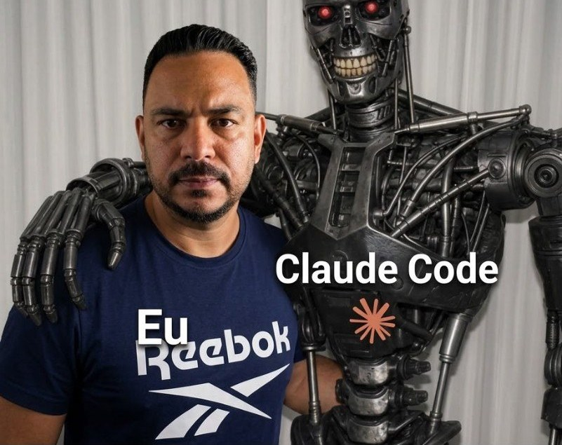

Sobre
Quem está atrás das aspas

Com mais de 10 anos em desenvolvimento de software, atuo na construção, manutenção e modernização de aplicações corporativas e sistemas de missão crítica. A base técnica é PHP, Laravel, Lumen, Vue.js, APIs REST/SOAP e bancos relacionais como PostgreSQL, Oracle e MySQL.
Trabalhei em projetos para grandes organizações e instituições do setor público — entre elas Correios, MEC, FNDE, TRF1 e secretarias de governo estadual. Isso afinou a capacidade de resolver problemas complexos, evoluir legado, desenhar soluções confiáveis e entregar software que sustenta processos de negócio reais.
Participo do ciclo completo: backend e frontend, integração de APIs, modelagem de dados, containerização, CI/CD e nuvem. Conforme o projeto, entram Docker, Git, AWS, Node.js, Vue.js, MongoDB e DynamoDB.
Hoje aprofundo Cloud Computing, AWS, DevOps, CI/CD, Infrastructure as Code e arquitetura de software — para unir engenharia sólida a soluções escaláveis e resilientes.
Gosto de resolver problemas do mundo real com tecnologia, melhorar o que já existe e continuar evoluindo como engenheiro. O horizonte de longo prazo é arquitetura e liderança técnica, sem me afastar do código.